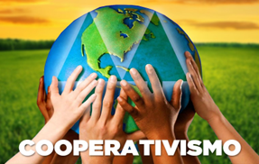

CONSTITUIÇÃO FEDERAL ğŸ Art. 14. A soberania popular será exercida pelo sufrágio universal y pelo voto direto y secreto ♪ c/ 💲 = p/ todos ♪ y ♪ nus🩲termos da lei ♪ mediante 💪😼👉 nossos direitos polÃticos nus inciso I 👉 plebiscito ♪ inciso II 👉 referendo ♪ inciso III 👉 iniciativa🌲😸🌲popular 🶠💪Então👉 violam a constituição !!! os Institutos d Peskisas d Intenção d Voto q; é SECRETO !!! c/ Biocracia d linguagens 👅 sentidos y/o significantes Educratas ♪ Nus 👙 termos dt poesia du 🩲 poema iniciadu ğŸ nas lei poética 🤔 cientifica 🶠Há polÃtica🤡👹👺criminosa 👙 nua 🩲 harmonia 〠criminosa na coalisão exercida à interambiguidalidades partidárias 🌬 sob ar d legalidade 🖕😼👉 sobre a constituição cidadã👙prostituÃda pralamentar 💩 nu 💰 toma 💩 lá 🤡 dá 🩲 k 💸 du 🖕😼🖕 c 💰 ngre💲💲 💰 d nacionais coligações polÃticas🤡👹👺criminosas 🖕😼👉 em nome d’uma harmonia🤡👹👺criminosa 🖕entre👉 os 3 podres💩💩💩poderes bancados p/ formação d kambadas d receptadores à 💩 IDPs 💩 indicações 🖕y🖕 votações 🤡 criminosas c/ 💩 u governo 🖕😼🖕 nu 🩲 Art. 49. É da competência exclusiva
du C💰ngre💲💲💰 🤡👹👺Nacional 😒 inciso V 👉 sustar os atos normativos du Poder Executivo q exorbitem du poder regulamentar ou dus limites d delegação legislativa 👈😼🖕 Qts crimes cometidos à 💩bozo🤡fezes💩 durante a pandemia y todo o mandato presidencial du Brasil d 2019/22 !?! temos nu 😒 inciso X 👉 fiscalizar y controlar ♪ diretamente ♪ ou por qq d suas (¿¿¿🙀???) Casas ♪ os atos du Poder Executivo ♪ incluÃdos os da administração indireta 👈😼🖕 Assistimos indiretas declarações ambÃguas da república 🤡👹👺 anticognitiva 🖕juntu🖕 à secreta desconstitucionalização coligada à compra 💰 d 💰 bancada 💱 partidária 〠d votação aus 🕠crimes 💸 c/ ar d 🖕legitimização👉 dus orçamento💱secretos 🖕😼👉 organização ??? d indutos〠criminosos p/ seus bozomÃnimos🤡cognitivos iniciar a desconexão da formação du Estado🔫Terrorista🤡Bozolândia 🖕 😒 inciso XVI 👉 autorizar ♪ em terras indÃgenas ♪ a exploração y o aproveitamento d recursos hÃdricos y a peskisa y lavra d riquezas minerais 😒 inciso XVII 👉 aprovar ♪ previamente ♪ a alienação ou concessão d terras públicas c/ área superior a 2500 ha 😒 inciso XVIII 👉 decretar o estado d calamidade pública d âmbito nacional previsto nus 🩲 arts. 167♪B ♪ 167♪C ♪ 167♪D ♪ 167♪E ♪ 167♪F y 167♪G desta 🈠Constituição 👙 Violada 👈😼👉 p/ boa harmonia c/ os crimes 🖕😼🖕 à + privilégios d imunidade aus 🕠3 criminosos 💰💱💸 podres💩💩💩poderes vias secretas💩emendas🤡💩👹💩👺pralamentarmus Ausência d Educracia🌲📖🌲Popular p/ biocratas exercer a biocracia🌲♪👤♪ğŸ¶ğŸŒ² biocrática🧠mente ğŸ¶
Convoca-c 💪😼👉 nóÃs ğŸ˜ğŸ¤ªğŸ˜œ brasileiros y brasileiras 🙆🙅🙋 nu 🩲 devir 👙 dt poema au 🕠projeto portador d lei ğŸ constituinte🌲📕🌲popular d iniciativa🌲ğŸ“🌲popular p/ então 💪😼👉 em plena 💃 soberana corregedoria🤘⚖🤙popular à s dependênciasğŸŠğŸŠğŸŠrepresentativas criminosas🤡👹👺diversas ⚖💰〠💸⚖ da cavernağŸŠğŸŠğŸŠrepublicanağŸ˜grega d PLATÃO ¿¿¿ HOJE !!! c/ 💻 uso 😉 d 🧠nossas teias🕸sociais podemos exercer os 3 legislativos 💪😼👉 em sites💻oficiais 💪😼👉 Eleger os 3 executivos 👈juntu👉 c/ seus 1ºs escalões 💪😼👉 em sites💻oficiais 👈c/👉 os cadastros🗳eleitorais 🩲 nus TREs y TSE 💪Enfim👉 renomeamos o CNJ – Conselho Nacional d Justiça p/ Corregedoria Nacional d Justiça – CNJ 💪😼👉 c/ a ♪ mudança ♪ extinguimos 🖕😼🖕 automaticamente🜠os STJ 👈y👉 STF 💪feito😼isto👉 podemos eliminar 🤑 os recursos 💰 supremos 💱 eternum 💸 p/ gerar 💰 interpretações 💱 normativas 💸 IDPs 🖕😼👉 du TEXTO 📠da Lei DENOTATIVA p/ o exercÃcio da educracia🌲📕🌲biocrata rumo à justiça à s vitimas 👈y👉 sociedade🧘ekilibrada 😠na prisão em 1ª instância p/ ressocialização c/ acompanhamento〠psicológico (Ñ parece 🤔 lógico 😵 juÃzes IDPs 💩d💩 !!!) c/ entrega d relatórios anuais 👈😼👉 resultados dus relatórios mensais da instituição penal reintegradora encaminhados au 🕠juiz da aplicação penal p/ acompanhamento das instituições🛂penais y anexa♪los à s fixas ressocializadoras 👈😼👉 durante as ressocializações é 👈cabÃvel👉 aus 🕠apenados 😠apelação !!! aus 🕠pacientes 😉 q c sentirem injustiçados c/ a 👈pena😼então👉 entra c/ recurso p/ revisão du processo 💪😼👉 em 2ª instância 💪😼👉 ñ satisfeito ??? entra c/ posteriori recurso à corregedoria (CNJ) d possÃveis decisões CONOTATIVAS d arbitrariedades⚖💰〠💸⚖IDPs d 🖕😼🖕 origem 👙 nua 💩 figura 👅 linguagem 😒 à normativa🖕interpretativa cabendo♪lhes 🖕😼☟ regulamentarmos ✠por justa⚖💰〠💸⚖causa à s exonerações y prisões 🖕destes🖕 magistrados⚖〠⚖criminosos 💰infiltrados💸 em nosso + importante poder💪corregedor y ressocializador da sociedade ğŸ¶
Plantamus âš– justiça 👙nu👙 sistema🤘⚖🤙jurÃdico 🩲 brasileiro respeitando o texto 📠da Lei 📕 Magna👈😼🖕s/ interpretações IDPs 🖕😼🖕 Outros agravantes 🖕ateu😉penal👉 por má fé au 🕠réu y ausğŸ•juÃzes 👈😼👉 após realizadas todas periciais 👈seguindo👉 todos regulamentos investigativos 🕵 y âš–ï¸ jurÃdicos du texto 📠da âš– Lei 👠legal ğŸ¶


LEI Nº 9.709 ♪ D 18 D NOVEMBRO D 1998 😠Art. 13. A iniciativa popular consiste na apresentação d projeto d lei à Câmara dus Deputados ♪ subscrito por ♪ nu 🩲 mÃnimo ♪ 1% du eleitorado nacional ♪ distribuÃdo pelo menos por 5 Estados ♪ c/ ñ menos d 0,3% dus eleitores d cada um deles 😠§ 1o O projeto d lei d iniciativa popular deverá circunscrever♪c a um só assunto § 2o O projeto d lei d iniciativa popular ñ poderá ser rejeitado por vÃcio d forma ♪ cabendo à Câmara dus Deputados (centrão corrupção) ♪ por seu (¿¿¿) órgão🖕competente (???) ♪ providenciar a (¿¿¿) correção (???) d eventuais impropriedades d técnica?legislativa ou d redação 😠Art. 14. A Câmara dus Deputados ♪ (Ñ 🩲 nu 💰 toma 💩 lá 🤡 dá 🩲 k 💸) verificando o cumprimento das exigências estabelecidas nu art. 13 y respectivos parágrafos ♪ dará seguimento à iniciativa popular ♪ (¿) consoante as normas du Regimento🖕Interno (?) Em fim
👈😼🖕 de💲💲a polÃtica d contradição 🖕y🖕 ambiguidade histórica du foro🖕😼🖕privilegiado da 💰plutocracia🤑 🖕😼🖕 paradoxal c/ o significado da 🤔democracia🤥 somos todos 🖕 = 🖕 perante a âš– Lei ??? 👈o😼u👉 Ñ existe ğŸ paradoxal 🖕 ≠🖕 entre os regimesğŸ˜democracia 👈 y 🖕 plutocracia 🤑
O embate 🩲 nu 👙 foroâš–privilegiado âš’entreâš” à juÃzo da plutocracia 💰 toma 💩 lá 💱🤡💱 dá 🩲 k 💸 polÃtica 🖕y👉 outr’importada 🚪 polÃtica eleitoral🤡👹👺econômica 🤑 deliberada🤥menteğŸŠğŸŠğŸŠrepublicana da democracia grega 🌲🙄📕😋🌲 s/ juÃzo ğŸ˜ğŸ¤ªğŸ˜œ Ñ apresentada au 🕠povo 👈😼👉 c/ nossa educracia 🌲👤🌲 y práticas 🌲📖🌲 educacionais p/ o pleno exercÃcio da cidadania 🌲👤📕👤🌲 cooperativa 💪juntu👉 au 🕠exercÃcio du coletivo⚣⚢⚤biodiverso 💪😼👉 rumo au 🕠desenvolvimento ğŸŒğŸŒ²ğŸŒğŸŒ²ğŸŒ biocrático 🌲😸👤ğŸ¶ğŸŒ² interespecÃfico 👈😼👉 ser 💩 isso âš“ ter 🧻 à kilo 👈Ñ👉 à grama 🖕😼🖕 s/ atolamentos à plutocracia🙈🙉🙊publicitária q; 🖕enfias👉 d fatos💰💱💸econômicos 🩲 nus 👙 submetem aus 🕠repetidos😈goebbels🙈🙉🙊plutocráticos 🖕😼🖕 Du 🃠folclore🖕😼🖕urbano 🃠Au 🕠terrorismo 💰 d 💸 mercado 🖕😼🖕 dominante 🖕assim👉 s/ o rebaixamento 🥶 da ğŸ˜ğŸ¤ªğŸ˜œ plateia 🙈🙉🙊 publicitária 🖕😼🖕 Ñ t/ 🤑 capitalismo 🙰 au 🕠necessidades sociopatas💰💱〠💱💸criminosas 💸💱💰 d 💸💱💰 poder🤡👹👺polÃtico 🖕y😼o🖕 poder🤑empresarial 💰 p/ 💱 o 💸 financiamento🙈🙉🙊publicitário 🖕d🖕 manutenção du folclore🤑urbano à caverna da república PLATÃO 🖕😼🖕 deliberada🤥mente🤯ambÃguo à democracia 👈y🖕 au 🕠devir🌲♻🌲público 💪😼🖕 são os empresários y os investidores da comunicação🙈🙉🙊criminosa à fake🤥news q fazem sua causa🤡👹👺publicidade 🖕y🖕 omitem a lavagem y a receptação🤑💱〠criminosa d verbas💰💱💸públicas 💩confinscus💩 partidários 🖕c/🖕 ar d legalidade🙈🙉🙊publicitária 🖕😼🖕 em causa parceria💰💱💸privada🚽💩🚽pública ğŸ‘😼🖕 Ñ somos iludidos c/ isso 🖕😼👉 Nous 💪sommes👉 gestão dus serviços🌲🍀🌲públicos 👈😼👠em 🌲🍀🌲 cooperativismo’uhğŸ¶totauuhhh🌲😸👤ğŸ¶ğŸŒ²biocrático 👈😼👉 vc pd 🙠nóÃs 👈tb🙀escolanomade.org👉 podemos neutralizar as forças 💰💱💸 plutocráticas 👠opressoras 👠discriminatórias 👠racistas 👠homofóbicas 👠religiosas 👠polÃticas 👠econômicas 👠corporativas 👠merdi💲💲iânus 👠empresarias 👠antissociais 👠publicitárias 👠🙈🙉🙊 👠midiótas 👠misóginas 👠corruptivas 👠du desejo 😽ğŸ˜ğŸ˜¸ğŸ˜˜ğŸ˜» intenso🌲🍀🌲popular 👈😼🖕 forças 🤡 d 💸 ignorâncias 🖕😼🖕 estas q; impõem à fake🤥news 💰🤑💸 econômicas 🖕submissão👉 à sociedade du cansaço CHUL HAN au 🕠desejo 👈😼👉 rebaixado 😬😨😳 aum 🕠grande cansaço 🤒😢😟 q t impede à manifestação🤘😸🤙intensa 👋 juntu 👠!!! 💪😼👉 du pleno exercÃcio da cidadania 🌲😸👤ğŸ¶ğŸŒ² socioambiental à superação da Democracia c/ Educracia à BIOCRACIA ğŸ¶
♪ Poema Comentário Du Portador* *Enviar p/ indiocinzento@zohomail.com * * * * * * * * * * * * * * * * * * * * * * * * *♪
♪ ♪
♪ ♪
♪_ _ _ _ _ _ _ _ _ _ _ _ _ _ _ _ _ _ _ _ _ _ _ _ _ _ _ _ _ _ _ _ _ _ _ _ _ _ _ _ _ _ _ _ _ _ _ _ _ _ _ _ _ _ _ _ _ _ _♪
Cooperação maximiza é na 🌲COOPERATIVA🌲 buscar a ponte ñ a meta NIETZSCHE falta qt da compensação da falta 🌲😸🌲 du bem q acontece au 🕠kombat à capacidade destrutiva du desejo capitalismo🤑ideal q atrai outros ideais folclóricos urbanos desqualificados y a servidão🤬voluntária au 🕠mercado 💰💱💸 responsável 🖕😼👉 pela estagnação da consciência 🤯 polÃtica 💠critica 🥴 🖕y🖕 revolucionária 🥺 ESCOLA FRANKFHURD 💪😼👉 Superada DEMOCRACIA !!! Nous 🌲ğŸ™ğŸŒ² sommes Educracia ğŸŒğŸŒ²ğŸŒğŸŒ²ğŸŒ BIOCRACIA ğŸ¶